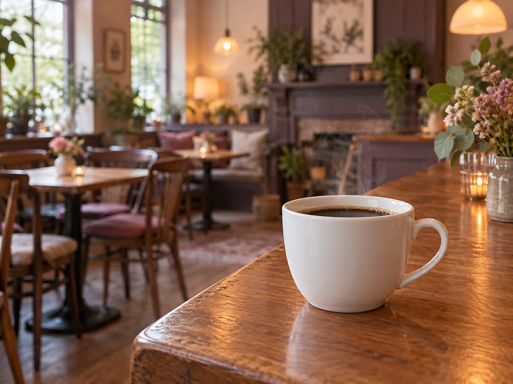

CONCEPT
名前に、お店のぜんぶが
入っています
Shalm caféは、秋田市下北手の住宅街にあるカフェです。 2021年1月、お客さんに笑顔の魔法をかけたい、という思いから開きました。
店名の「Shalm」は、2つの英語を組み合わせた造語です。
shine
＋
calm
＝
Shalm
輝く（shine）と、穏やかな（calm）。その2つを重ねた名前です。
落ち着いた色の店内に、暖かい色のライト。壁や床には遊び心のある落書きがあって、 見つけると思わず笑顔になる、と紹介されています。穏やかな場所の中に、 小さく輝くものが置いてある。名前のとおりの店です。
